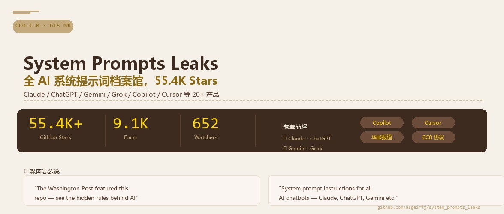

你不好奇吗？你每次打开 ChatGPT、Claude、Gemini，它们到底被提前"嘱咐"了什么？为什么 Claude 总是那么客气？为什么 ChatGPT 有时候会拒绝回答？为什么 Gemini 那么谨慎？这些 AI 背后，都有一份"出厂设置"——系统提示词（System Prompt）。而有人把它全扒出来了。
这个 GitHub 仓库叫 system_prompts_leaks，作者 asgeirtj，专门收集各大 AI 公司的系统提示词。Claude、ChatGPT、Gemini、Grok、Copilot、Cursor……你能想到的 AI 产品，几乎都在里面。55.4K Stars、9.1K Forks，连 华盛顿邮报 都专门报道过，标题是"AI 背后的隐藏规则"。你想想，一个收集提示词的仓库能火到这种程度，说明这东西有多有意思。
⭐为什么 55.4K 人都在围观这个仓库？
你琢磨琢磨，系统提示词是什么？它是一个 AI 模型启动时收到的第一段指令，相当于这个 AI 的"性格设定"和"行为准则"。比如说：
🤫这是 AI 的"大脑开机指令"
你看到的所有 AI 回复，都是先读了系统提示词之后才生成的。系统提示词告诉它：你是谁、你能做什么、你不能做什么、你该怎么说话。
🔏本来应该是保密的
各大 AI 公司一般不公开系统提示词，觉得这是"内部机密"。但这个仓库通过一些技术手段把它们提取了出来，公之于众。
🔍意义不止是"吃瓜"
对开发者来说，这是学习提示词工程的顶级教材——你能看到 Anthropic、OpenAI、Google 这些顶级团队是怎么写提示词的。
01一句话说清楚这个仓库是什么
System Prompts Leaks = 一个 GitHub 仓库 + 所有 AI 的系统提示词 = AI 世界的"源代码"泄露
说白了，这就是一个公开的"AI 提示词档案馆"。它把你能想到的所有 AI 产品的系统提示词都收集了起来，整理成 Markdown 文件，按公司分类存放。你打开就能看到 Claude 是怎么被教导的、ChatGPT 的"脑回路"是什么样的、Gemini 的约束条件有哪些。
🔹不是黑客工具
不是教你破解 AI 的。它就是一个公开的文档仓库，所有内容都在 GitHub 上可以直接看。
🔹不是只有"泄露"
Anthropic 官方也在里面公开了部分提示词，有些是正式的、有版本号的发布版本。
🔹CC0 协议，随便用
仓库本身是 CC0-1.0 协议，属于公共领域，你想怎么用都行。
02里面到底有什么？一个仓库看遍所有 AI
这个仓库分门别类，按公司组织，结构非常清晰。咱们看看主要有哪些：
🔴 Anthropic / Claude
最新的 Fable 5、Opus 4.8、Sonnet 5 全都有，还附带上一版的 diff 对比，看看 Anthropic 改了什么。还有 Claude Code 的提示词、Claude Design（48 个工具 + 16 个技能 + 9 个启动源）、移动端、桌面端、Chrome 扩展、Office 集成……连 Excel、Word、PowerPoint 的 Claude 插件提示词都有。
🟢 OpenAI / ChatGPT
GPT-5.5 的 Thinking、Instant、API、Codex 四个口味，还有 Friendly 和 Pragmatic 两种人格变体。GPT-5.4、GPT-5.3、Codex CLI 的各种模型配置。还有 web search、deep research、Python、canvas、image gen、memory 这些工具的提示词。以及安全策略——你看完就知道 OpenAI 怎么防止 AI 乱说话的。
🔵 Google / Gemini
Gemini 3.5 Flash、3.1 Pro、Gemini CLI、Antigravity CLI、Jules、NotebookLM、AI Studio、YouTube 集成、Chrome 集成、Workspace。Google 的提示词风格跟 Anthropic 和 OpenAI 完全不一样，对比起来特别有意思。
🟣 xAI / Grok
Grok Build（CLI Agent）、Grok 4.3 Beta、4.2、Expert。还有 Grok 的安全指令和人格变体。马斯克的 AI 提示词什么样？你去看看就知道了。
📦 其他（20+ 个产品）
Cursor、GitHub Copilot、VS Code Copilot Agent、Perplexity Computer、Meta AI、Mistral Le Chat、Notion AI、Qwen 3.6 Plus、Docker Gordon AI、Zed AI、Warp 2.0 Agent、ElevenLabs、Kagi Assistant……你能想到的 AI 产品，基本都在里面了。
03怎么用这个仓库？
使用方式极其简单，不需要装任何东西：
1打开 GitHub 仓库
直接访问 github.com/asgeirtj/system_prompts_leaks。不需要 clone，直接在线浏览。
2按公司找你要的模型
目录结构是按公司名组织的：Anthropic/、OpenAI/、Google/、xAI/、Cursor/、Microsoft/……点进去就是 Markdown 文件。
3看 README 的"Recently Updated"
仓库首页有个最近更新表格，标了每个提示词的最新版本日期和说明。想追新的话，盯这个表就行。
4看 diff 对比（重点）
比如 Claude Opus 4.8 升级到 Fable 5，改了哪些提示词？仓库里直接有 diff 链接，一眼就能看出 Anthropic 调整了什么策略。
💡 推荐阅读顺序
如果你是第一次看，建议先从 Anthropic/Claude/ 开始，因为 Claude 的提示词写得最详细、最有条理，读起来最舒服。然后看 OpenAI 的，对比一下两家风格差异。最后看 Google 的——你会发现 Google 的提示词风格跟其他家完全不一样，特别有意思。
04从开发者角度看，这个仓库值钱在哪？
如果你做 AI 提示词工程，这个仓库就是顶级教材。你想想，平时你写提示词，能参考的不过是一些博文和教程。但现在你能直接看到 Anthropic、OpenAI、Google 这些顶级团队写的系统提示词——这是真正的"第一手资料"。
📝学习顶级提示词结构
Anthropic 的提示词结构非常清晰：身份定义 → 行为准则 → 能力边界 → 输出格式。每个部分都写得像一篇小作文。你可以直接套用这个结构来写你自己的提示词。
🔄对比不同公司的风格
Anthropic 的提示词温暖、详细、像导师；OpenAI 的提示词简洁、直接、像工程师；Google 的提示词保守、谨慎、像律师。三种风格，三种哲学，值得细细品味。
📊追踪版本变化
通过 diff 对比，你能看到模型升级时提示词改了什么。比如从 Opus 4.8 到 Fable 5，Anthropic 增加了哪些指令、删除了哪些约束。这些都是 AI 产品迭代的"日志"。
🔒理解安全边界设计
每个 AI 都有安全策略——哪些不能答、哪些要拒绝、哪些要引导。看看 OpenAI 的安全提示词和 Anthropic 的安全策略，你会发现两种完全不同的设计思路。
05几个特别值得看的亮点
🏆Claude Fable 5 vs Opus 4.8 的 diff
Anthropic 最新模型升级到底改了啥？有直接的 diff 链接，一行一行对比。这种版本对比是理解 AI 产品迭代思路的绝佳材料。
🎭GPT-5.5 的 8 种人格
OpenAI 给 GPT-5.1 做了 8 种人格变体：Default、Friendly、Professional、Candid、Cynical、Efficient、Nerdy、Quirky。每种人格的提示词都不一样，你可以看到 OpenAI 是怎么用提示词"调教"出不同性格的。
🛠️Claude Design 的工具集
48 个工具 + 16 个技能 + 9 个启动源——这是 Anthropic 设计模式下的完整提示词。如果你想了解复杂 AI 系统的提示词怎么写，这个是必读的。
📰华盛顿邮报报道
一个 GitHub 仓库能被主流媒体报道，本身就说明它影响力大。华邮的报道标题是"AI 背后的隐藏规则"，让更多人意识到系统提示词透明化的重要性。
⚠️ 一个提醒
这些提示词是 AI 公司的核心知识产权。虽然仓库本身是 CC0 协议，但提示词内容本身可能受到版权保护。自己学习、研究完全没问题，但别拿去商用或者当成自己的东西发布。
Q1：System Prompts Leaks 仓库主要收集了什么？
👆 点击每个选项查看对错
Q2：这个仓库对开发者最重要的价值是什么？
👆 点击每个选项查看对错
📌 这节课你学到了什么
✅ 系统提示词是什么——AI 的"出厂设置"，决定性格和行为
✅ System Prompts Leaks 是什么——55.4K Stars 的 AI 提示词档案馆
✅ 仓库内容——覆盖 Anthropic、OpenAI、Google、xAI 等 20+ 产品
✅ 怎么使用——4 步：打开仓库 → 找公司 → 看文件 → 对比 diff
✅ 开发者价值——学习顶级提示词工程、对比不同风格、追踪版本变化
✅ 几个亮点——Fable 5 diff、GPT 人格变体、Claude Design 工具集
📒
第 1 课 · 笔记完成
你已经搞懂了 System Prompts Leaks 是什么、为什么火、怎么用。
下一步就是打开仓库，挑一个你最常用的 AI 模型，看看它的"脑回路"长什么样。